Installing the ISO Image for Photon OS 3.0
After you download the Photon OS ISO image into a folder of your choice, complete the following steps.
Upload the ISO Image
Upload the ISO image to a datastore that is attached to the host on which you'll create the Photon OS virtual machine.
Create a new VM
Log in to your vSphere environment. In the Virtual Machines window, choose Create/Register VM.
On the Select creation type screen, select Create a new virtual machine.
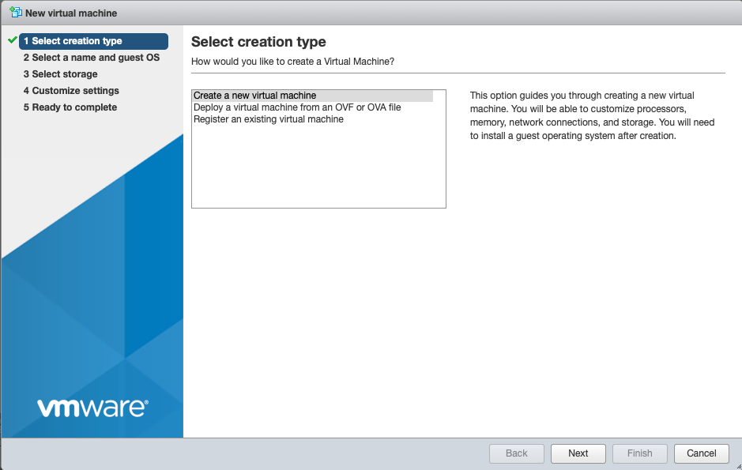
Choose Next.
Configure VM Settings
Specify a VM name.
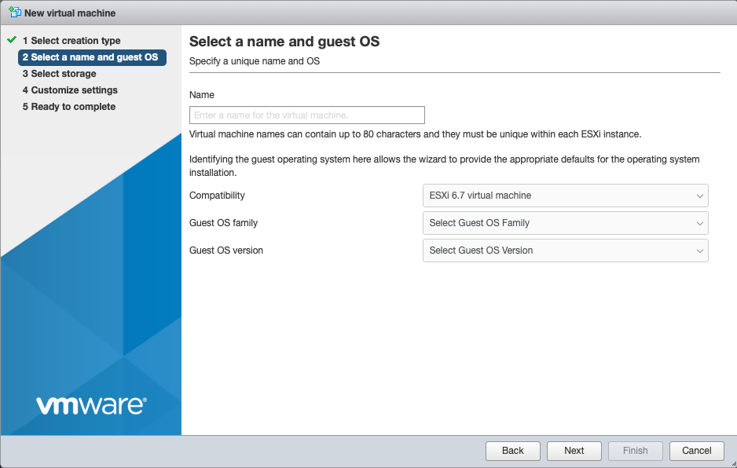
Specify a guest operating system.
- For Compatibility, select ESXi 6.5.
- For Guest OS family, select Linux.
For Guest OS version, select VMware Photon OS (64-bit).
Choose Next.
Select the Target Datastore
Select the datastore where you want to store the VM.
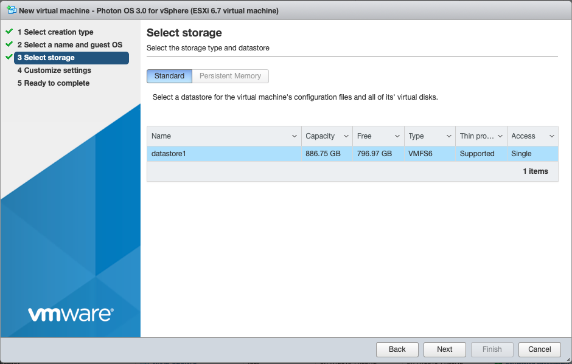
Click Next.
Customize VM Settings
Customize the virtual machine settings.
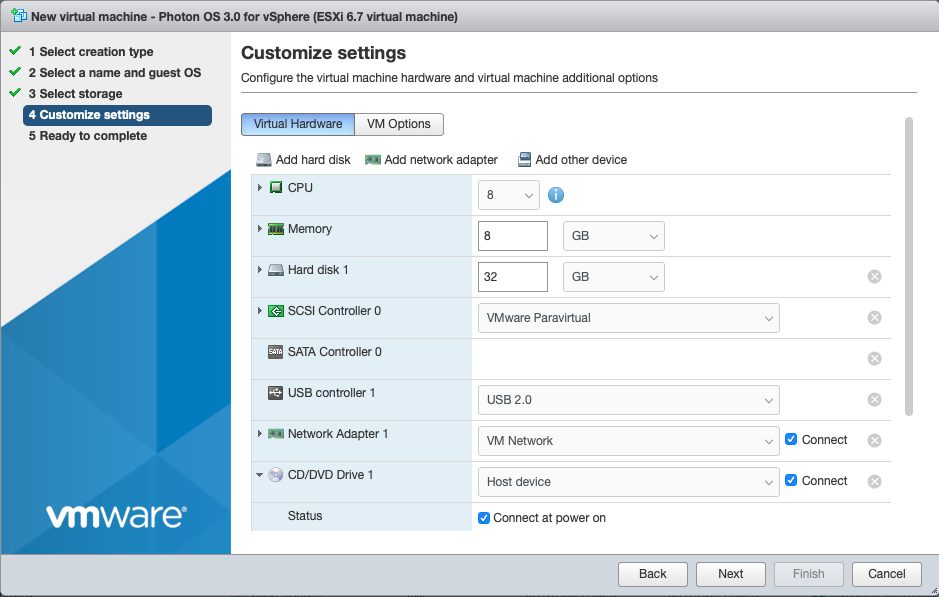
For CD/DVD Drive 1, click the drop-down and select Datastore ISO file.
In the Datastore browser, select the ISO that you want to import.
Change other settings as applicable.
- The recommended virtual hardware settings for your Photon VM are heavily dependent upon the container load you intend to run within Photon OS – more containers or more intensive containers will require you to adjust these settings for your application load. VMware suggests 2 vCPU, 1024MB memory, 20GB hard disk. Any unwanted devices should be removed. Be sure to mount the Photon OS ISO on the CD/DVD Drive and put a check in the box next to, Connect At Power On.
If you want to configure a secure boot for the Photon OS VM you created, choose the VM Options tab, expand Boot Options, and select EFI from the firmware drop-down. An EFI boot ensures that the ISO content is signed by VMware and that the entire stack is secure.
Choose Next.
Verify VM Settings
The installer displays a summary of your selected settings.

Click Finish. vSphere creates the VM.
Power on the VM
Select the VM and power it on.
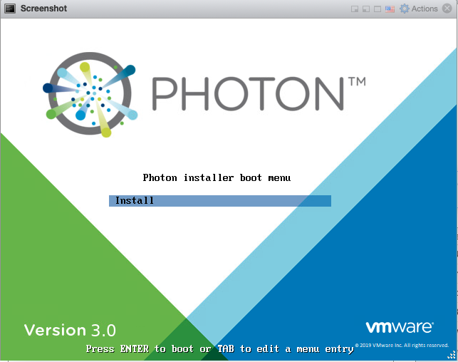
When you see the Photon Installer boot menu, press Enter on your keyboard to start installing.
Accept the License Agreement
Read the License Agreement and press the Enter key to accept.
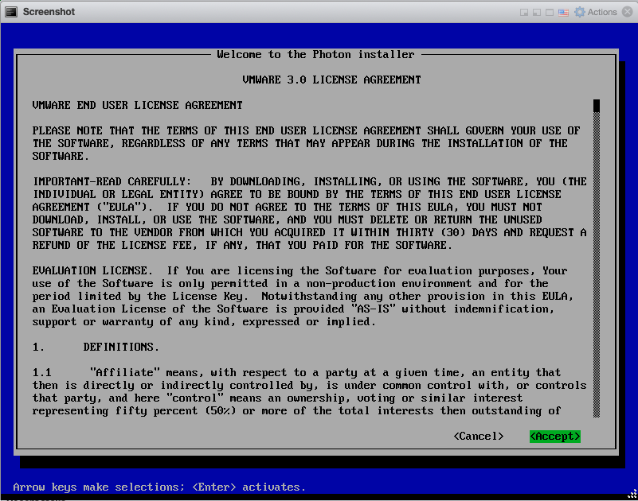
Configure the Partition
The installer detects one disk, which should be the 16GB volume configured as part of the virtual machine creation. Choose Auto to have the installer automatically allocate the partition, or choose Custom if you want to configure individual partitions, and then press the Enter key.
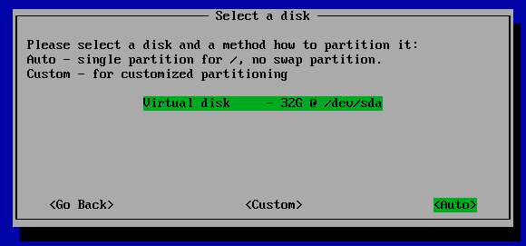
Note: If you choose Custom, the installer displays the following screen.

For each custom partition, choose Create New and specify the following information:

Size - Preallocated size of this partition, in MB.
Type - One of the following options:
- ext3 - ext3 file system
- ext4 - ext4 file system
swap - swap partition
Mountpoint - Mount point for this partition.
Choose OK and press the Enter key. When you are done defining custom partitions, choose Next and press the Enter key.
The installer prompts you to confirm that you want to erase the entire disk.

Choose Yes and press the Enter key.
Select an Installation Option
After partitioning the disk, the installer prompts you to select an installation option.
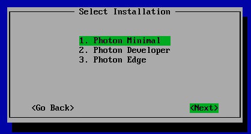
Each install option provides a different run-time environment, depending on your requirements.
Option Description Photon Minimal Photon Minimum is a very lightweight version of the container host runtime that is best suited for container management and hosting. There is sufficient packaging and functionality to allow most common operations around modifying existing containers, as well as being a highly performant and full-featured runtime. Photon Full Photon Full includes several additional packages to enhance the authoring and packaging of containerized applications and/or system customization. For simply running containers, Photon Full will be overkill. Use Photon Full for developing and packaging the application that will be run as a container, as well as authoring the container, itself. For testing and validation purposes, Photon Full will include all components necessary to run containers. Photon OSTree Server This installation profile will create the server instance that will host the filesystem tree and managed definitions for rpm-ostree managed hosts created with the "Photon OSTree Host" installation profile. Most environments should need only one Photon OSTree Server instance to manage the state of the Photon OSTree Hosts. Use Photon OSTree Server when you are establishing a new repository and management node for Photon OS hosts. Note: The option you choose determines the disk and memory resources required for your installation.
Select the option you want and press the Enter key.
Select the Linux Kernel
Select a Linux kernel to install.

- Hypervisor optimized means that any components that are not needed for running under a VMware hypervisor have been removed for faster boot times.
Generic means that all components are included.
Choose Next and press the Enter key.
Specify the Hostname
The installer prompts you for a hostname and suggest a randomly generated, unique hostname that you can change if you want.
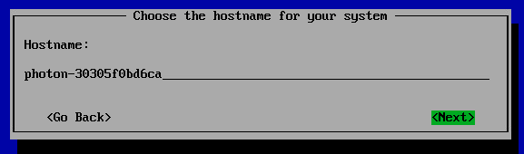
Press the Enter key.
Specify the System root Password
The installer prompts you to enter the system root password.
Note: Photon OS will not permit commonly used dictionary words to be set as a root password.
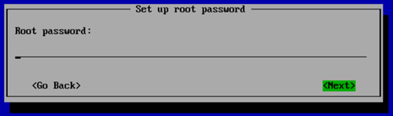
Type a password and press the Enter key.
The installer prompts you to confirm your root password by typing it a second time.
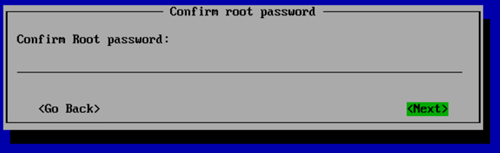
Note: If you have trouble with unintentional repeated characters in the Remote Console, follow VMware KB 196 ( http://kb.vmware.com/kb/196) for a setting to apply to the virtual machine.
Press the
Enterkey. The installer proceeds to install the software. Installation times will vary based on the system hardware and installation options you selected. Most installations complete in less than one minute.Reboot the VM and Log In
Once finished, the installer displays a confirmation message (which includes how long it took to install Photon OS) and prompts you to press a key on your keyboard to boot the new VM.
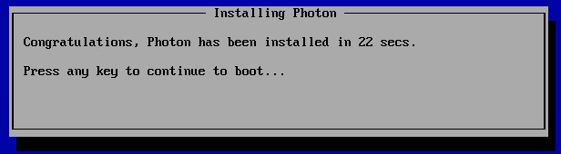
As the initial boot process begins, the installer displays the Photon splash screen, and then a login prompt.
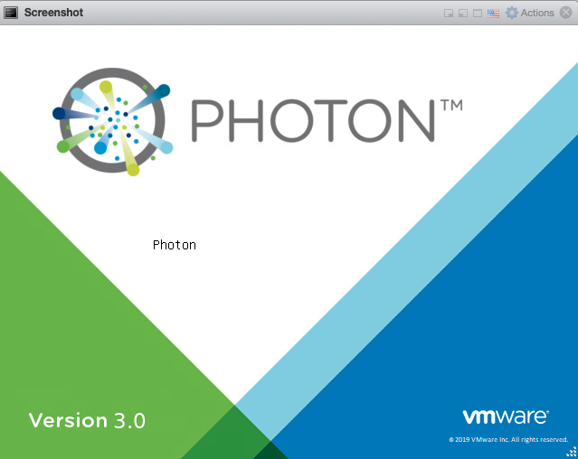
At the login prompt, type root as the username and provide the password chosen during the installation.
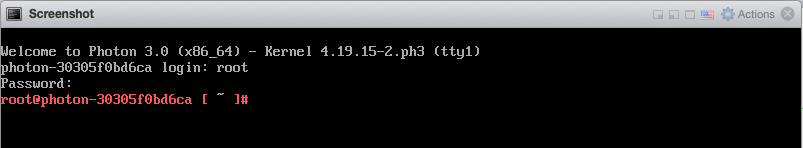
You can now use your container runtime environment and deploy a containerized application.